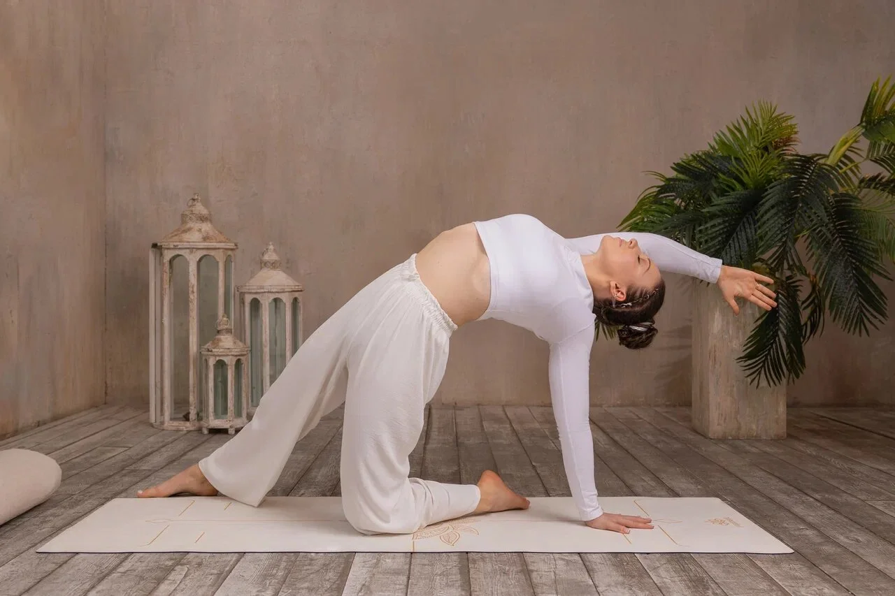
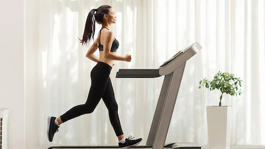
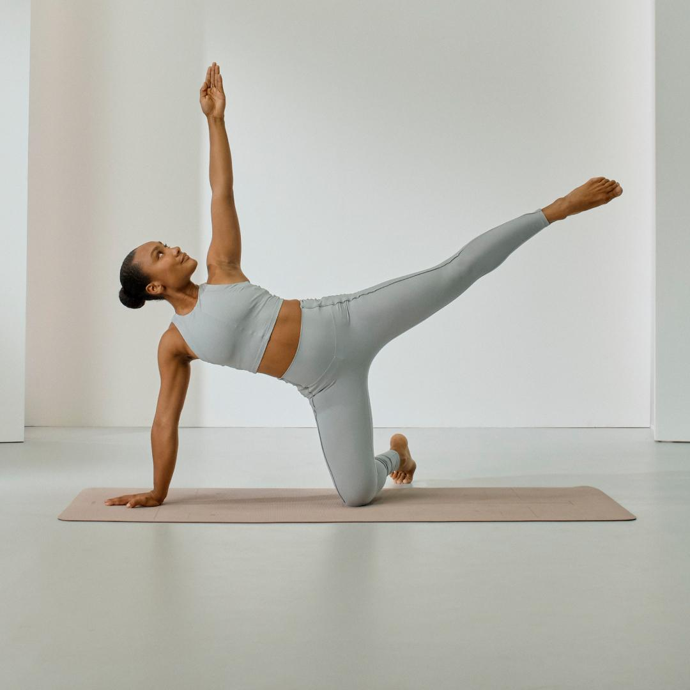
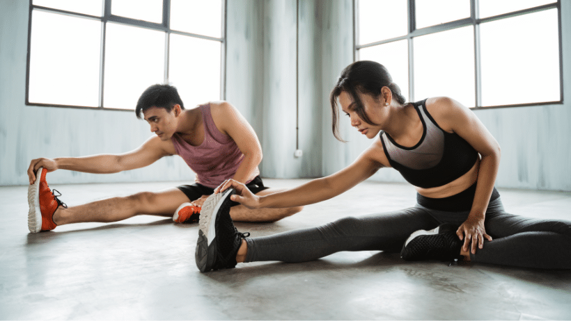

Ранкова йога

Дивитися відео тренування
Текстова інструкція:
Легка розтяжка для початку дня. Виконуйте кожну позу по 30 секунд.
Оберіть програму для підтримки форми. Натисніть на посилання, щоб переглянути відеоінструкцію.

Текстова інструкція:
Легка розтяжка для початку дня. Виконуйте кожну позу по 30 секунд.

Текстова інструкція:
5 хвилин розминки, 20 хвилин бігу на місці, 5 хвилин заминки.

Текстова інструкція:
Базові вправи з гантелями на всі групи м'язів. 3 підходи по 15 повторень.

Текстова інструкція:
Зміцнення м'язів кору та спини. Плавні рухи з постійним контролем дихання.

Текстова інструкція:
45 секунд активної роботи, 15 секунд відпочинку. 5 кіл базових вправ.

Текстова інструкція:
Комплекс на розтяжку всього тіла. Ідеально підходить після силового тренування.
Відстежуйте свої результати та досягайте нових висот.
Плануйте своє щоденне меню залежно від ваших цілей. Оберіть свій варіант: